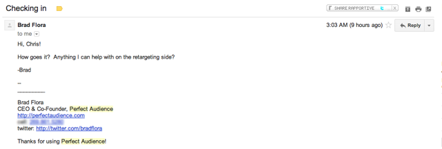

Getting meaningful, actionable feedback from your customers is a vital part of your business strategy. Quality feedback allows you to make decisions that have a real impact on your business and it’s bottom line.
Getting customers to provide you with feedback is no easy task but when you get it right, you can collect a lot of great information all in one place. Using online surveys has become a powerful way to help in the process of getting feedback…but how can you ensure you’re asking the right questions and getting maximum exposure with your customers?
Here are five ways you can make sure your customer feedback surveys actually get answered and that the feedback from your customers isn’t just useless data that gets dusty in a database somewhere.
1. Don’t make your customers think (too much)
Most online survey tools (Wufoo, Survey Monkey, Google Forms) have a huge assortment of feedback widgets.
When considering the layout of your survey there is a trade-off between asking closed questions that don’t give meaningful answers and making your survey so ‘difficult’ that no one bothers to complete it. With this in mind you should definitely consider the full range of radio buttons, select boxes, text areas and sliders to make your survey as efficient as possible.
Perfect Audience run quarterly surveys and they do a great job of mixing open-ended questions with simple multiple choice and multiple selection options. Here’s an example:

Giving customers the chance to complete the entire survey in less than two minutes makes them much more likely to give feedback.
Save open-ended text areas for the really meaningful questions and, even then, keep your questions as short as possible.
Perfect Audience’s survey is a great example of an effective customer feedback survey. Use it for inspiration.
2. Be relevant, all the time.
Getting customer feedback when it’s timely and relevant can give you the chance to provide pragmatic responses and make changes quickly.
A great way to be relevant is to ask your customers for feedback as they’re working on your site. Qualaroo is a handy piece of software that makes it super easy to collect customer feedback on-the-go.
Take this example from NitroPDF who use Qualaroo:

The survey question is very specific question and, thanks to Qualaroo, they’re able to show this popup on their Pricing page, helping them gather feedback about the sorts of customers engaging with this aspect of the site.
Moreover, Qualaroo’s new Nudge feature allows you to direct your customers based on the answers they give, right then and there. An example we use at Vero is asking customers that have been reviewing the landing page for greater than 30 seconds and haven’t signed up:
{kind=link}
…and directing customers that click the first radio button to this form:

This is taking customer feedback to a whole new level as it becomes interactive. It also allows us to review and adjust the questions, answers and our website’s value proposition in mere hours, with minimal hassle.
3. Be (and appear) genuine
Jason Fried wrote this great post on the 37Signals’ blog (Signal vs. Noise) about a simple email survey that really encourages customers to respond.

Zingerman’s approach is different from the typical survey email, which usually looks something like this example from Audi (also shared on SvN):

If you ask yourself which survey feels more genuine, it’s fairly obvious that Zingerman’s is the answer. Not only does the survey itself seem more approachable but it appears to have come directly from an individual (or small group of individuals) within a customer service team that actually cares about its customers.
This is in contrast with the Audi example which feels like the sort of email that has been sent to thousands of people and will never actually be followed up on. In reality both emails have probably been sent to thousands of customers, yet it’s the tone and execution of the Zingerman campaign that makes it different and gives it a genuine touch.
Being genuine in all of your customer interactions is a great way to market your business. This is particularly true when it comes to online businesses: traditionally, the customer service bar is so low that if you make an effort you will certainly stand out from your competition. This often means being an individual and investing a little thought into the process of putting yourself in your customers’ shoes.
Another quick example of genuine feedback comes from Perfect Audience who track when you pause campaigns in your account. If you pause some campaigns, Brad (the founder) might send you an email like this:

If this email isn’t genuine than I don’t know what is! Short, sweet and delivered at the perfect time. There is nothing like great customer service.
4. Automate the process
Getting customer feedback face-to-face, one-on-one, in the same room is the ultimate format but, when you’re looking to get feedback at scale, automating the process can be a massive advantage.
At Vero we do two things that help us to collect actionable customer feedback:
- We email every customer that signs up for a free trial and does not convert to a paid plan a simple, personal email asking for their feedback. We send this out automatically a week after the customer’s trial expires.
Here’s a copy of the email:

We’ve been running this campaign for a few months and, despite not having spent much time tweaking it, nearly 2% of all trail signups (that don’t convert) complete this survey and, of those, 50% ultimately end up trying Vero again in the future. Not to mention the fact that each and every answer is a huge help for us when making product decisions and improving Vero’s value to all.
- We have little smileys inside Vero (an idea we developed based on similar methodologies from 37Signals and Xero) that allow customers to tell us their current mood:

The smileys remember their ‘state’ for a few days so customers can alter their feedback quickly and easily. Around 35% of our customer base use these smileys at least once every month. We have an automated reminder that gets sent to our help desk whenever someone clicks either smiley:

This lets one of us get in touch personally when someone is upset. There is often a good reason and this gives us a chance to instantly find out about product bugs and general customer unrest. Everyone here at Vero knows that, no matter the time of day or night, any red smiley emails should be responded to as quickly as possible! It only takes a few moments on your iPhone and the returns are huge.
How can you automate the process of collecting feedback?
5. Actually follow-up!
Although automating your customer feedback collection processes is a great asset this does not excuse you from following up.
Just as Jason Fried alludes to in the Audi example up above, pumping customer feedback into a big spreadsheet or database that is never actually used is pointless. Actually reading and replying to customer feedback goes a long way to building a relationship.
Regularly building in a review for the data you’ve collected is an important step, as is following up with customers that elect to share their contact details. Creating this feedback loop builds trust with your customers as they will truly appreciate your comments and love your company even more as you take on board their suggestions to make their experience of your business even better.
Over to you
What other ways have you collected meaningful user feedback? What tools have you used to learn what you can do better as a company?